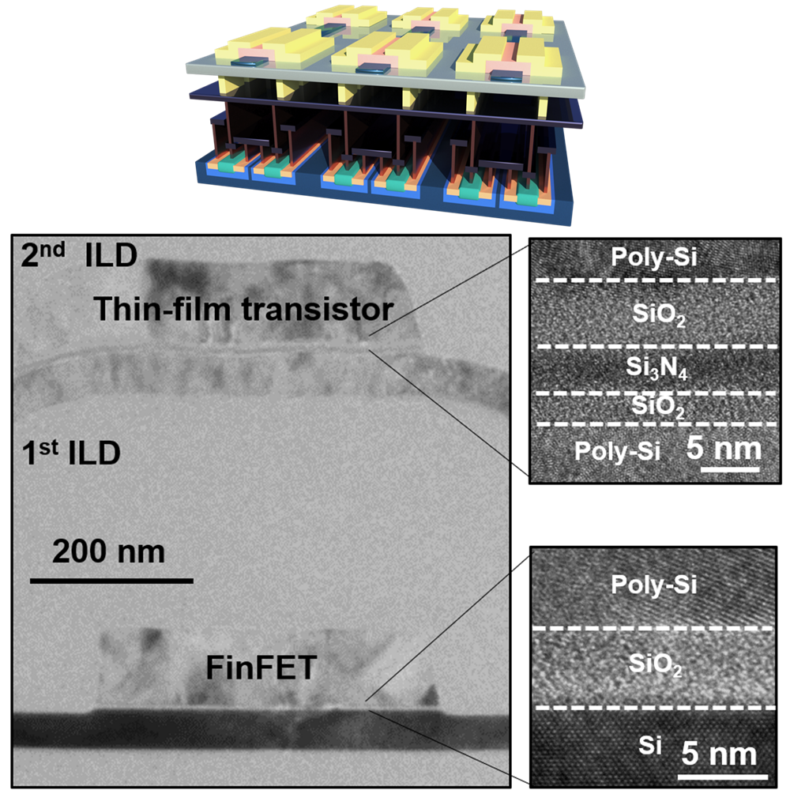
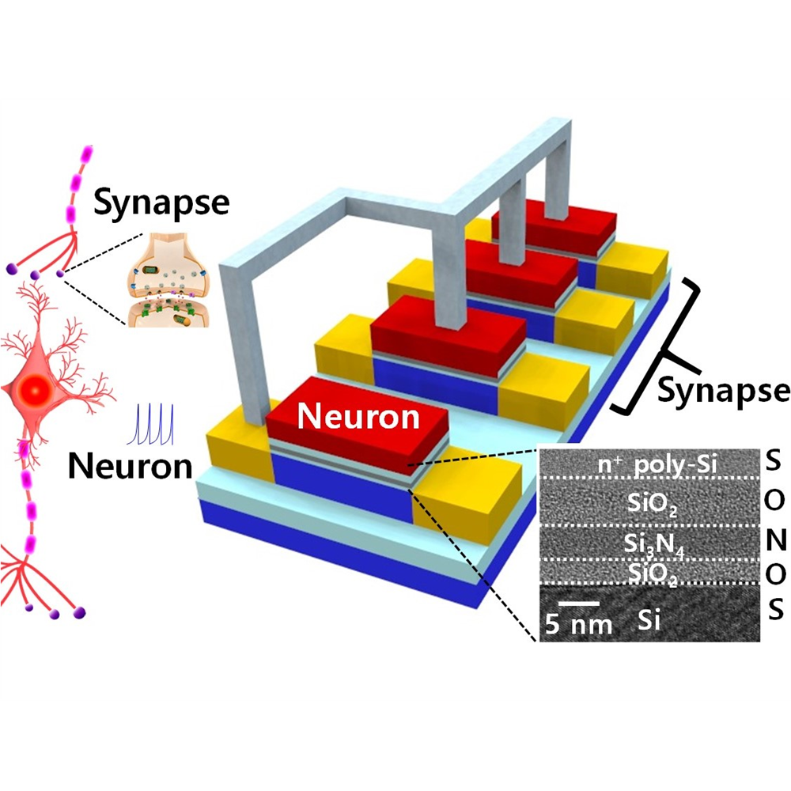
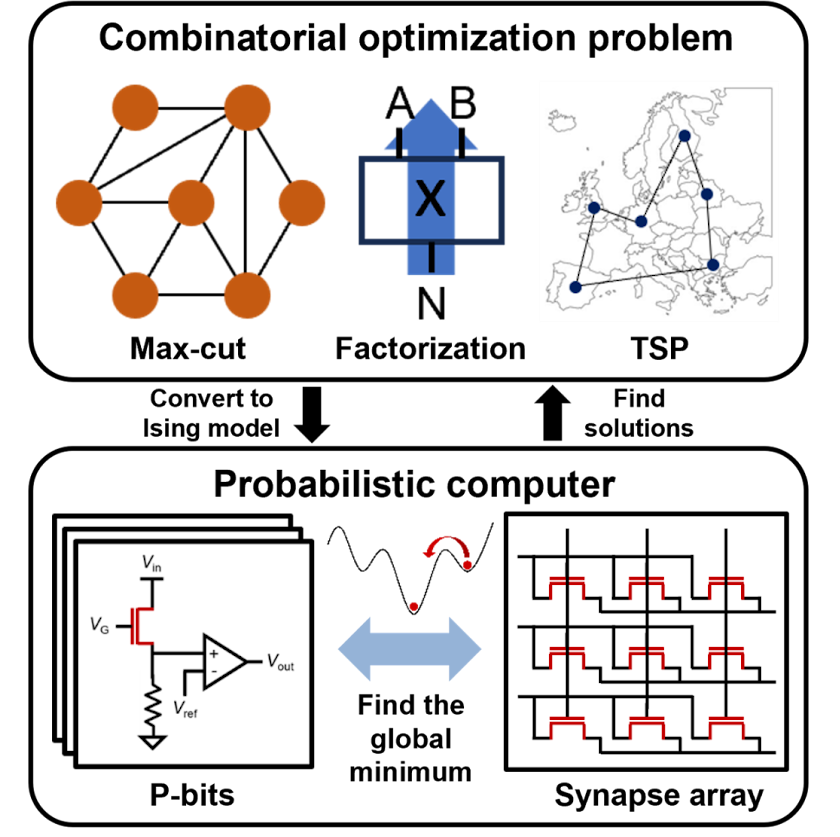

3D integration plays a crucial role in the semiconductor industry, as it significantly boosts chip density while reducing the length of interconnections. In particular, monolithic 3D (M3D) technology, which involves the sequential fabrication of top devices over the bottom devices, allows for high integration density compared to Through Silicon Via (TSV) technology. We develop 3D-integrated logic and memory devices based on a Back-End-of-Line (BEOL) compatible process and wafer bonding technology. These include complementary FET (CFET), 3D/4D DRAM, and 3D/4D NAND. Furthermore, we deploy 3D-integrated devices to various applications such as neuromorphic and quantum computing.

Bio-inspired computing (neuromorphic computing) can perform AI tasks with ultra-low power by mimicking the human brain that consumes only 20 W. To create neuromorphic hardware, it is essential to employ artificial neurons and synapses that mimic the functionalities of biological neural networks. We develop various neuron and synaptic devices, as well as perform system-level studies including algorithms. Furthermore, we develop diverse neuromorphic sensors that have both neuromorphic and sensory functions, enabling in-sensor computing for ultra-low power Internet of Things (IoT) sensors.

Quantum-inspired computing can efficiently solve combinatorial optimization problems that challenge conventional processors. Probabilistic computing uses p-bits, stochastic elements that fluctuate between 0 and 1, to efficiently explore solution spaces at room temperature, offering a practical alternative to quantum hardware. Similarly, Ising machines reformulate hard combinatorial tasks into spin models, where the collective dynamics naturally converge toward near-optimal solutions. By combining device-level innovations with system-level architectures, we create scalable, low-power platforms for quantum-inspired computing hardware.

소자가 장시간 동작하며 겪는 열화(degradation) 현상을 물리적으로 규명하고 예측합니다. 부유 바디 효과(FBE, Floating Body Effect), 자기 발열(SHE, Self-Heating Effect), 유전체·계면 열화가 문턱전압 이동·누설전류·신뢰성 수명에 미치는 영향을 분석합니다. 실리콘과 산화물 반도체를 모두 다루며, logic·DRAM·NAND·TFT·capacitor 등 다양한 소자에 걸쳐 연구합니다.
Ongoing
Completed